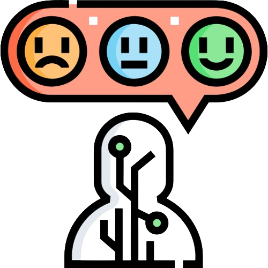

Sobre o que é UI e UX:
O que é UI e UX Design?
O UI e UX Design é um sistema importante para qualquer site, pois usando estes elementos, você poderá criar um site mais bonito e chamativo para seus clientes, porem tem outros meios de usar ui e ux design, podendo gerar um site de forma interativa, inclusiva e divertida para seu usuario. Tudo dependerá do publico alvo que você quiser alcançar.
O que é UI?
O sistema UI é toda a interface do site, tudo aquilo que o usuario possa interagir é UI, pois estes sistema é como o usuario vai interagir com seu site, se vai interagir: tocando, ouvindo, vendo e até mesmo falando, pois através do UI poderá ser feito um layout que agradará o seu publico alvo.
O que é UX?

O sistema UX é a experiencia que o cliente vai ter usando o site, vai ser algo pessoal do usuario, e atravez deste mesmo sistema, o usuario poderá interagir por: feedback, cadastro e etc...
Diferença entre UI e UX